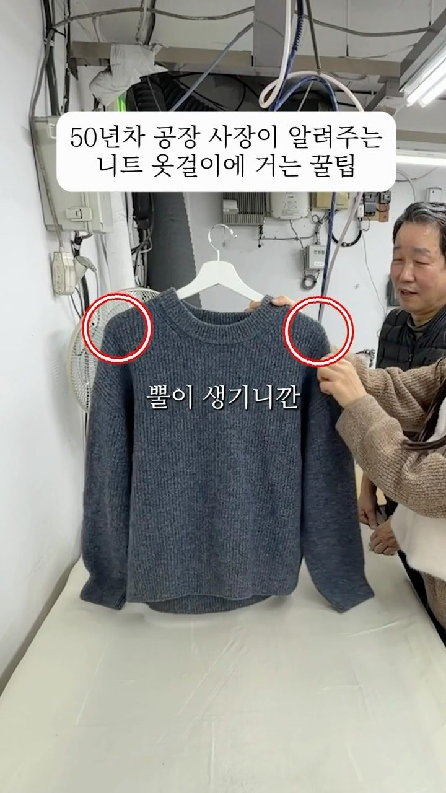

패션 · 릴스 · 2026-11-22
니트를 옷걸이에 걸 때 어깨 뿔 자국 막는 법
50년 차 니트 공장 사장님이 알려준, 니트를 옷걸이에 걸어도 어깨에 뿔 자국이 생기지 않도록 접어서 거는 방법을 소개한다.

- 니트를 옷걸이에 그대로 걸어두면 어깨 부분에 뿔처럼 튀어나온 자국이 생긴다.
- 작성자가 존경하는 50년 차 공장 사장님이 어깨에 자국이 남지 않게 거는 법을 알려주었다.
- 니트는 영상에서처럼 접어서 옷걸이에 걸어두는 것이 좋다고 권한다.
- 작성자는 사장님께 배운 옷 관리 꿀팁을 앞으로 하나씩 공유하겠다고 밝혔다.
음성을 받아쓰지 못해 캡션과 대표 화면만으로 정리했습니다
원문 보기 (de_charlotte__)